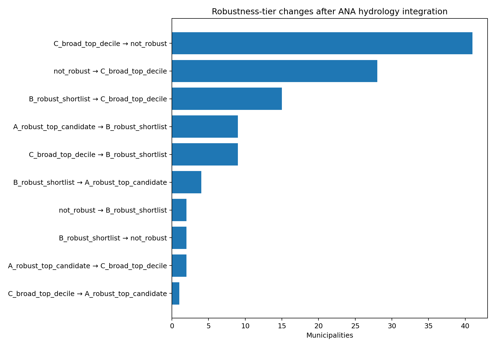

Infrastructure × Clean Energy × Water × Digital Connectivity
Where does Northeast Brazil make the strongest case for green data-centre development?
A reproducible municipality-level screening of 1,794 locations using official Brazilian power-system, renewable-resource, telecom, climate, hydrology and protected-area evidence. The result is a due-diligence funnel—not a claim that any parcel is construction-ready.
V4 SCREENING COMPLETE · STEP 16 PUBLIC-DATA DILIGENCE IN PROGRESS
Water changed the answerTier A contracted from 17 to 11 once ANA hydrology became real evidence instead of a missing field.
Grid reality stays separateTransmission strength is not treated as spare connection headroom; Pecém and Parnaíba retain EPE access-risk flags.
No fake certaintyQ95 measures hydrological access evidence—not a water right, utility commitment or permitted sustainable withdrawal.
Explore the evidence
Scenario contender map
The browser map contains the 190 municipalities that reach the top 100 in at least one scenario. The underlying analytical model covers all 1,794 Northeast municipalities.
Joint robustness test
Tier-A candidate funnel
Tier A must survive scenario-weight perturbation and uncertainty in the fallback water-distance method. All 11 current Tier-A municipalities have direct local ANA Q95 intersections.
| Candidate | Archetype | Scenario rank | Median MC | P90 stress |
|---|
Step 16 · deeper diligence
From 11 robust candidates to 5 external-diligence priorities
This is not a new weighted ranking. The five locations below are where the public evidence currently justifies spending the next round of utility, water, fibre and parcel diligence. None is investment-ready.
Bom Jesus da Lapa, BA
External diligence nowStrong grid + Q95 evidence, zero municipality-level CNUC overlap, moderate flood-risk screen and active Adutora da Fé reinforcement.
Gate: utility headroom · industrial water allocation · independent fibre · parcel screenBrumado, BA
External diligence nowExcellent cooling-climate signal, clean CNUC screen and medium baseline water-stress risk, with current water-security investment.
Gate: high municipality flood-risk screen · utility headroom · water permit · route-diverse fibreJuazeiro, BA
Advance conditionallyVery strong Q95, renewables and provider depth, but AdaptaBrasil flags very-high water stress and high flood risk; SAAE is restructuring a loss-heavy network.
Gate: demand pressure · industrial water · flood/parcel · utility capacitySão Gonçalo do Amarante, CE
Strategic conditionalThe strongest digital-industrial hub case with excellent connectivity and low flood-risk screen, but EPE access risk and very-high climate water stress remain blocking questions.
Gate: connection timing/headroom first · industrial water strategy · carrier pathsUrandi, BA
Advance conditionallyExcellent renewable-grid-climate balance and clean CNUC screen, but 2026 municipal water rationing shows a real service-stress signal while a major new adductor remains at project stage.
Gate: reliable industrial water source · utility headroom · fibre redundancyReserve challenger: Parnaíba remains strategically important because of connectivity, ZPE context and current water-system upgrades, but EPE grid-access risk, challenging cooling conditions, high flood/water-stress screens and 28.5% municipality CNUC overlap keep it outside the first five for now.
Step-16 public-risk evidence adds AdaptaBrasil baseline water-stress (2020) and flood/flash-flood/urban-flood risk (2015), plus current official public water-system signals. These are municipality-level diligence indicators, not parcel engineering conclusions.
What changed?
Adding water does not just polish the ranking—it restructures it.
Strong inland renewable candidates with weak local hydrological evidence fall back, while São Francisco-linked corridors and other municipalities with direct Q95 evidence become more robust. That is a desirable model behaviour: previously missing evidence is now allowed to change the decision.
The result still does not say a water-intensive cooling design should be used. REDATA-style water efficiency remains a project-level design gate, not a municipality bonus.
Current overall signal
São Gonçalo do Amarante / Pecém remains the strongest cross-scenario candidate, but Juazeiro and Bom Jesus da Lapa strengthen substantially once direct hydrological evidence is considered. Parnaíba also rises while retaining an explicit grid-access warning.
Decision evidence
Why the shortlist survives scrutiny
Three views of the same result: multidimensional evidence, joint uncertainty, and the energy–grid–water trade-off.



Methodology
Evidence first; gates before score.
Energy
LABREN solar + Global Wind Atlas resource, ANEEL operating clean-energy ecosystem and deliberately low-weight pipeline context.
Grid
EPE transmission/substation topology and ONS operating infrastructure. It measures infrastructure strength—not verified MW headroom.
Connectivity
ANATEL fibre backhaul and provider diversity. Carrier count does not prove physical route independence or dark-fibre availability.
Climate
INMET 1991–2020 normals using 74 resolved Northeast station codes, with relocation/conflict flags retained where needed.
Environment
Official MMA/CNUC July-2026 geometry. Integral Protection share is penalized more heavily than Sustainable Use share; parcel legality remains a hard gate.
Water
ANA Q95 geometry. Direct intersections use the municipality Q95 evidence index; missing local reaches use nearest-reach Q95 percentile with distance decay, sensitivity-tested from 15–60 km.
Not verified by the scoreUtility connection offer · spare MW · water permit · reclaimed-water contract · dark fibre · parcel title · geotechnics · final environmental licence.
Regulatory treatmentFacility WUE and clean-energy obligations are due-diligence gates. A municipality cannot “score its way out” of project-level REDATA compliance.
Primary public sources
Traceable data lineage
ANEEL SIGA · IBGE 2025 municipal mesh · EPE WebMap and transmission studies · ONS open data · INPE/LABREN Solar Atlas · Global Wind Atlas · ANATEL transport network · INMET 1991–2020 normals · ANA/SNIRH Q95 and 2025 water-use context · MMA/CNUC July 2026 · MDIC/ZPE · AdaptaBrasil MCTI · Cemaden drought monitoring.
This project is a comparative screening framework. A high rank means “investigate further,” not “build here.”